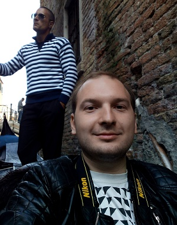

<!DOCTYPE html>
<html lang="en"></html>

<html>
<head>
    <meta charset="UTF-8">
    <title>Evgeni Anapreenko</title>
    <link href="assets/style.css" rel="stylesheet" type = "text/css">
</head>


<body>

<header>
    
<div class="photo">
                
                
                
                 <!--  height="220" -->
</div>
    
    

<div class="contact">

<h1>Evgeni Anapreenko</h1>
<h2>Contacts:</h2>

E-mail: <a href="mailto:6757508@gmail.com">6757508@gmail.com</a><br>
Skype: <a href="skype:jenya77791">jenya77791</a><br>
Telegram: <a href="https://t.me/Eugenio7779">Eugenio7779</a><br>
GitHub: <a href=https://github.com/Eugenio7779> https://github.com/Eugenio7779 </a><br>
Viber: <a href="viber://chat?number=+375336689669">+375336689669</a>

              </div>

            </header>

<main>
    <h3>Summary</h3> <br>
    For many years working as a managing partner, I have learned how to work in a team and 
    help my employees when necessary. I am sure that I can become a valuable addition to your 
    team and successfully participate in the development of the Front-end. <br><br>


<h3>Skills </h3>
<ul type="circle">
    

    <li>HTML</li>
    <li>CSS</li>
    <li>JavaScript</li>
    <li>Git</li>
    <li>WordPress</li>
    <li>Joomla</li>
</ul> 
<br>

<h3>  Working Experience </h3> <br>

  <h4><li>04.2015 - 11.2018, OOO "BDC ELECTRONIC"</li></h4>

    <h4>Position: Managing partner</h4>
  
Responsibilities:
<ul type="circle">
 
    <li>Сontrol and supervision of all business operations of the enterprise</li>
    <li>Setting tasks for employees and monitoring performance</li>
    <li> Signing new customer contracts</li> 
</ul> <br>

  <h4><li>03.2014 - 04.2015, OOO "BDC ELECTRONIC"</li></h4>

  <h4>Position: Sales-manager </h4>

Responsibilities: 
<ul type="circle">
  <li> Sale services and search for clients. </li> </ul>  <br>


<h3> Education </h3><br>

<h4> <li>University</li></h4>
Institute of Information Technologies BSUIR (2011-2015)<br>
Information technology and control in technical systems. <br>
<br>
<h4><li> College</li></h4>
Minsk State Higher Radiotechnical College (2006-2011)<br>
Engineer of information technologies and control.<br><br>

<h4> <li>Courses</li></h4>
<ul type="circle">
<h5>November 2012- January 2013</h5>
<li>Educational center "Shipalex" - Java programming for beginners</li>

<h5>November 2011</h5>
<li>Itransition - course "MongoDB: a new hope" </li> </ul><br>


<h4> Languages </h4>
  <ul type="circle">
    <li>Russian - native;</li>
    <li>English – A2 (I always practice English while traveling).</li>
</ul>
</main>

</body>


</html>